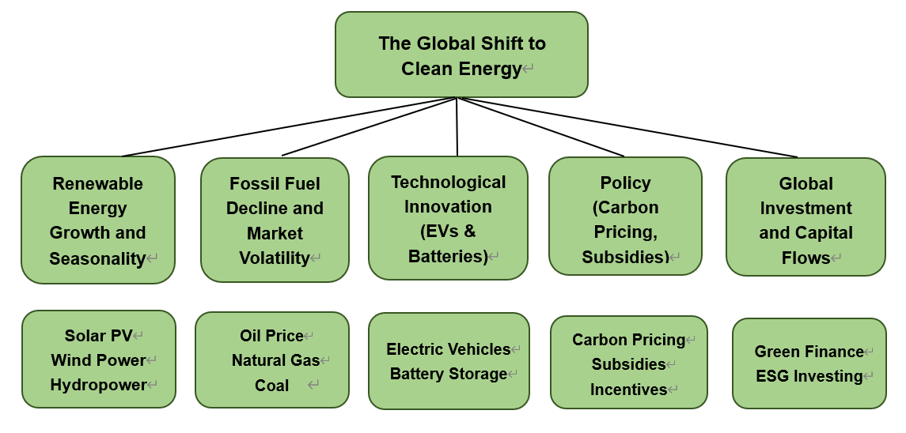

Energy Transition: A Time Series Perspective
Topic Explanation
The world is undergoing a profound transformation in how energy is produced, consumed, and financed. Historically, global economic growth has been tightly coupled with fossil fuels such as oil, coal, and natural gas. However, mounting evidence of climate change, advances in clean technologies, and shifting government policies have accelerated the global transition toward renewable energy. This transition—often described as the “energy transition”—is reshaping markets, altering geopolitical balances, and influencing the financial system.
From a data science perspective, this topic provides a unique opportunity to explore long-term structural trends alongside short-term volatility. Energy data exhibits strong seasonality (e.g., higher natural gas demand in winter, increased electricity demand during summer heat waves), as well as structural breaks (such as the 2015 Paris Agreement or the 2020 oil price crash). It also connects multiple domains: technology costs, consumer behavior, financial market reactions, and environmental policy.
Understanding these dynamics is not just an academic exercise—governments, investors, and industries rely on such analyses to guide decision-making in the face of uncertainty.

The Big Picture

The global shift to clean energy is one of the most significant transformations shaping the 21st-century economy, with implications spanning technology, markets, policy, and finance. This analysis will consider the following five main areas:
Long-Run Evolution of Power Generation Mix: This theme examines how the composition of electricity generation—wind, solar, natural gas, coal, nuclear, and hydro—has shifted over time. It focuses on long-term decarbonization trends, structural breakpoints, and the growing role of renewables.
Seasonality & Climate Drivers: This theme investigates seasonal and climatic patterns in different generation sources and how temperature, irradiance, wind patterns, and hydrology influence renewable and fossil-fuel generation.
Linkages and Causality in Energy Prices: This theme analyzes dynamic interactions among WTI crude oil, Henry Hub natural gas, and energy-related financial indices, focusing on short-run spillovers, long-run cointegration, and causal relationships.
Financial Dynamics of Clean Energy Assets (Return & Volatility Behavior): This theme focuses on price behavior, return dynamics, volatility clustering, and risk spillovers in clean energy ETFs (ICLE/ICLN), especially relative to traditional energy ETFs such as XLE.
Dynamic Interactions within Multi-Energy Systems (Inter-Energy Dynamics): This theme analyzes how different energy sources interact in a multi-energy system—whether renewables displace fossil fuels, whether natural gas complements variable renewables, and how shocks propagate through the generation network.
Literature Review
Long-Run Evolution of Power Generation Mix
Global studies show that the power sector is undergoing consistent structural decarbonization. Large-scale industry reports, such as BP’s Statistical Review1 and the IEA’s World Energy Outlook2, document that renewable generation is expanding faster than fossil fuels.
Academic literature emphasizes that declining technology costs and supportive policies play a major role in accelerating renewable adoption3. BloombergNEF identifies several “cost-parity tipping points,” where renewables become cheaper than fossil alternatives4, reinforcing long-run structural shifts.
Seasonality and Climate-Driven Dynamics of Energy Supply
Solar power’s strong dependence on irradiance and seasonal temperature cycles has been widely documented5. Wind power output is shaped by atmospheric circulation patterns, which vary by season and region6.
Natural gas generation typically peaks during winter months due to heating demand, as shown in U.S. EIA research7. Hydropower output depends on precipitation and seasonal water availability, and climate variability is increasingly recognized as a source of short-run volatility in renewable generation across multiple studies.
Linkages and Causality in Energy Prices
Oil price shocks affect broader energy markets through production costs and macroeconomic channels8.
Studies show mixed evidence of integration between oil and natural gas: some periods show price comovement9, while others suggest partial decoupling depending on market structure10.
Financial literature further indicates strong causal links between energy prices and sector-level equity indices11, with volatility intensifying during crises, as observed in connectedness research12.
Financial Dynamics of Clean Energy Assets
Clean energy equities are highly sensitive to fluctuations in oil prices, as shown in early work on alternative energy stocks13.
Clean energy assets display strong volatility clustering, making GARCH-family models appropriate for risk analysis14.
More recent work suggests these assets are gradually transitioning from being predominantly policy-driven to more market-driven15, yet they remain exposed to macro-energy shocks.
Cross-asset spillovers—especially during periods of market stress—can be analyzed through the connectedness framework proposed in12.
Dynamic Interactions within Multi-Energy Systems
Renewable energy expansion often displaces fossil-fuel generation, consistent with evidence of long-term “crowding out” effects16.
Natural gas plays a critical role as a flexible generation source that compensates for wind and solar intermittency17.
Recent system-level analyses highlight that shocks can propagate across coal, gas, and renewable sources through substitution and complementarity channels18.
These dynamic interactions underscore the importance of VAR and structural modeling approaches in understanding modern electricity systems.
Guiding Questions
- Has the power generation structure (wind, solar, gas, coal, nuclear, hydro) consistently shifted towards clean energy over the past decade? How rapidly has this shift occurred?
- Do clean energy sources such as wind, solar, and hydropower exhibit significant and stable seasonal patterns? Is this seasonality changing?
- How much does weather (temperature or HDD/CDD) affect solar, wind, and natural gas power generation? Are there any lag effects?
- Is there a significant correlation between oil prices (WTI) and natural gas prices (Henry Hub)? Which leads the other?
- Does natural gas price (HH) significantly affect natural gas power generation? And does it exhibit different elasticities in winter and summer?
- Do changes in fossil fuel prices “squeeze out” or “promote” renewable energy generation (such as solar/wind)?
- Is there a spillover effect in returns and volatility between clean energy ETFs (ICLE/ICLN) and traditional energy ETFs (XLE)? 8. Do clean energy ETFs (ICLE/ICLN) exhibit significant volatility clustering (GARCH characteristics)? Are their risk levels higher than those of traditional energy ETFs?
- Are there substitution relationships within multi-energy systems (wind/solar/coal/gas/nuclear/hydro)? For example, will wind and solar power displace coal gas?
- How do exogenous shocks in the energy market (surges in oil prices, abnormal temperatures) propagate among different energy sources through the VAR system?